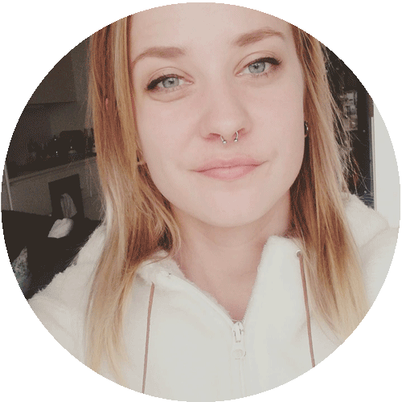

Portfolio
1. semester eksamen | Johanne S. Karlsen
Velkommen...
...til min 1. semester portfolio, på Multimediedesign uddannelsen.

Mit navn er Johanne, jeg er 26 år og har netop færdiggjort 1. semester som multimediedesigner på KEA.
Denne portfolio indholder opgaver fra de temaer vi har været igennem på 1. semester.
Jeg er tidligere uddannet mediegrafiker, og har derfor en baggrund inden for grafisk design, jeg elsker at være kreativ og skabe, jeg er altid klar på at lære mere og udvikle på mine kompetencer. Det er en stor tilfredsstillelse for mig, når mine kunder er glade for mit arbejde – det er faktisk dét, som gør at jeg elsker dette fag.
Jeg synes allerede på dette semester, at jeg har fået nogle rigtig gode tekniske værktøjer. Jeg glæder mig hver dag til at lære mere!
Johanne S. Karlsen